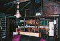

精品课程
北京交通大学电子信息工程学院
孙强
 教授，1959年9月生于北京。中国通信学会高级会员，北京通信学会高级会员。从事光纤通信及光接入网方面的研究。主讲本科生课程《光纤通信》、《宽带接入技术》。主讲研究生课程《光纤通信系统》。曾主讲过的本科生课程有《全光网》等课程。
教授，1959年9月生于北京。中国通信学会高级会员，北京通信学会高级会员。从事光纤通信及光接入网方面的研究。主讲本科生课程《光纤通信》、《宽带接入技术》。主讲研究生课程《光纤通信系统》。曾主讲过的本科生课程有《全光网》等课程。
研究方向： 光纤通信，光接入网技术，光纤传感器网技术，嵌入式接入技术
- 1978年9月-1982年7月 北京邮电大学 本科
- 1986年9月-1992年12月 北京邮电大学 博士
- 1992年12月-1995年8月 北京交通大学 博士后
- 1995年12月-2006年10月 北京交通大学 副教授
- 2006年10月 至今 北京交通大学 教授
 学术著作： 《光纤通信系统及其应用》 清华大学出版社 2004.1 《光接入网技术及其应用》 清华大学出版社 2005.9 编写了《铁路大百科全书》的宽带接入技术部分 代表论文： 大城市光区域接入网 铁道学报 2003 Vol.25 No.3 转辙机动作杆中光纤应力传感器的研究 铁道学报 2004 Vol.26 No.6 光突发交换的应用协议分析 铁道学报 2005 Vol.27 No.3 广播与选择型OADM在ULH传输网络中的应用 铁道学报 2005 Vol.27 No.4 HFC接入网技术研究 光电子技术与信息 2004 Vol.17 No.2
科研项目： 主持了南京-芜湖110公里无中继光缆通信系统的改造项目 主持了博士后基金项目用于光缆CATV系统中的掺铒光纤放大器。 主持了2Mbit/s光通信端机研制项目 主持了8Mbit/s光通信端机研制项目 主持了嵌入式网络视频监控系统的研究与开发 部分主持了铁道部重大科研项目转辙机运行状态自动检测系统